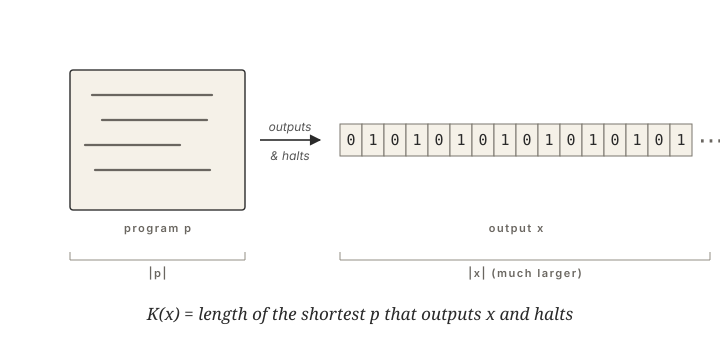

{kind=link}
There is a particular pleasure in reaching the closing line of a long argument and realizing the whole thing could have been spelled in three words. Understanding, in its most useful sense, has that texture — the moment when a sprawling chaotic thing collapses into a much shorter description of itself. The mathematician Andrey Nikolaevich Kolmogorov, born in the Russian provincial town of Tambov in 1903, spent his life on the mathematics of that moment, and ended it having quietly given the world the formal language we now need to talk about both human minds and large language models.
Andrey Kolmogorov
Kolmogorov was born on April 25, 1903. His mother died in childbirth; he was raised by his aunt Vera Yakovlevna Kolmogorova in the village of Tunoshna near Yaroslavl, on the upper Volga, and took her surname. He was a precocious reader by five and was publishing observations about peas and arithmetic in a children's journal by seven. In 1920, at seventeen, he entered Moscow State University, where he came under the influence of Nikolai Luzin and the famous “Luzitania” school of analysis. Within four years he had a paper on trigonometric series in Comptes Rendus; within seven he was widely regarded as the most original young mathematician in the Soviet Union.
What followed was one of the broadest scientific careers of the twentieth century. In 1931, at twenty-eight, he became a full professor at Moscow State. In 1933 he published the Grundbegriffe der Wahrscheinlichkeitsrechnung — the slim German monograph that gave probability theory its modern axiomatic foundation in measure theory. Before that book, probability was a patchwork of useful intuitions; after it, it was a chapter of analysis. He went on to do foundational work on turbulence (the K41 theory, 1941, still used to design aircraft); on dynamical systems (the KAM theorem, with Arnold and Moser, in the 1950s and 1960s); on intuitionistic logic, topology, and cohomology. Few twentieth-century mathematicians moved with the same authority across so many subfields. Then, in 1965, in a paper modestly titled “Three Approaches to the Quantitative Definition of Information,” he founded what we now call algorithmic information theory — and put his name on the concept this essay is about.
He was, alongside all this, the great institutional builder of Soviet mathematics. His seminar at Moscow State University ran for nearly four decades and trained a roster of students — Vladimir Arnold, Yakov Sinai, Roland Dobrushin, Albert Shiryaev, Vladimir Uspensky — who would go on to reshape probability, dynamical systems, and information theory across the Cold War. In 1963, with Isaak Kikoin, he co-founded what became known as the Kolmogorov School: a specialized boarding school within Moscow State University dedicated to finding and training gifted teenagers from the Soviet provinces, including ones whose parents could never have brought them to Moscow. He spent his Saturdays there for years, teaching geometry. The man who would eventually formalize “shortest description” also built one of the most efficient pipelines for compressing human talent into mathematicians the century would produce.
An Intuition in Three Strings
The idea that came to bear his name is best approached by example. Imagine three strings of one million binary digits. The first is all zeros. The second is the pattern 0101010… repeated half a million times. The third is the record of a million fair-coin flips. All three have the same length. Yet there is a powerful intuition that they contain very different amounts of “stuff.” For the first, you can describe it in a sentence: one million zeros. For the second: the pattern 01 repeated half a million times. For the third, the shortest honest description seems to be the string itself. You cannot, with high probability, compress a truly random sequence; the only way to tell someone what it says is to read it out, bit by bit.
The Shortest Program
Kolmogorov's move, in 1965, was to take that intuition and bolt it down. He defined the complexity K(x) of a finite string x as the length of the shortest program that, when run, outputs x and halts. The shortest program. In any language? Here the trick — proved by Kolmogorov, and independently by Ray Solomonoff and Gregory Chaitin around the same time — is what is now called the invariance theorem: the choice of universal programming language changes K(x) by no more than an additive constant. Up to that constant, the complexity of a string is a property of the string itself, not of the language you happen to be writing in. A profound and slightly thrilling claim. Complexity, in Kolmogorov's framework, is intrinsic. The string 01010101… is simple because there exists a short program for it, full stop, no observer required.
The reason this definition works at all is the universal Turing machine — Alan Turing's 1936 model of computation, the abstract device against which every actual computer is, in some sense, a draft. The universal Turing machine has the property that any computable description in any other formalism can be re-encoded as a program for it with at most a fixed overhead, the length of the interpreter you would need to translate between systems. That fixed overhead is exactly the additive constant in the invariance theorem. The Turing machine is what makes “shortest description” a robust, machine-independent notion rather than a fight about programming languages. The deepest gift of Kolmogorov's framework, in this light, is that it gave information theory an algorithmic spine where Claude Shannon's earlier theory had given it a statistical one. Shannon told you the average information content of messages drawn from a known distribution; Kolmogorov told you the intrinsic information content of this string, sitting on the desk in front of you.

Training as Compression
This is the lens through which today's large language models become legible. A modern frontier model has on the order of hundreds of billions of parameters. The corpus it was trained on contains trillions of tokens — orders of magnitude more raw data than the model itself can store. When training drives the loss down to something useful, the model has, in effect, located a relatively short program — the weights — that approximates the much longer text. Training, viewed from a few thousand feet, is approximate Kolmogorov compression. The model is the compressed description of its data. This isn't a metaphor invented for op-eds: Ilya Sutskever has, for years, framed intelligence directly as compression, and Marcus Hutter has run a literal cash prize, the Hutter Prize, for whoever can produce the shortest lossless compressor of a chunk of Wikipedia. In Kolmogorov's language: the better the language model, the closer its weights approach K of the corpus it was trained on.
From K(x) to K(f)
The version of complexity an LLM is really approximating, though, is slightly different from the one we have been discussing. Kolmogorov's K(x) measures the shortest program for a single string. The object a language model is reaching toward is a function — a mapping from prompts to completions, evaluated billions of times across a corpus. The formal extension has been in the literature for decades. Conditional Kolmogorov complexity K(y | x) measures the shortest program that, given x, outputs y — one input, one output. The complexity K(f) of a function f is the length of the shortest program that, fed any input in its domain, produces the matching output — one program, many input/output pairs. Solomonoff, working independently of Kolmogorov in 1964, built exactly this construction into a universal predictor: weight every program by 2−|p|, condition on the input/output pairs observed so far, and read off the most likely next output. Jorma Rissanen's Minimum Description Length principle (1978) is the practical, finite version of the same idea; Kolmogorov himself, late in his career, sketched it in a different vocabulary as his 1974 structure function, separating structural regularity from residual randomness in data. In this language, an LLM is not approximating K of any single string. It is approximating K(f) for the function f implicit in (prompt, completion) pairs across the internet — with training as the search procedure, and the weights as the candidate program. This is the K-complexity world that modern machine learning actually lives in.
Hallucination, by Another Name
The frame is useful because it changes which questions are interesting. An LLM doing well at a task is, by this account, a statement that the relevant slice of the world is K-compressible — that there exists a short program for it, and training has found a reasonable approximation. An LLM failing at a task often means the opposite: the genuine K-complexity of the task exceeds what the model's weights can hold, and the gap shows up as confusion or hallucination. Hallucinations, in this language, are decompression artifacts — places where the model's short program cannot reach the long thing it was meant to encode, and so it fabricates plausible bits to fill the silence. The debate over whether models “really understand” softens, in Kolmogorov's hand, into a more tractable question: how much of the thing you are asking about is compressible at all, and how close to K has the model gotten?
The Same Shape
The same lens, finally, illuminates the human in the loop. Humans, perhaps more visibly than computers, are in the compression business. A toddler compresses thousands of dropped-cup observations into the rule that things fall; Newton compressed centuries of astronomy and ballistics into a single line of algebra; Maxwell compressed the entire pre-relativistic theory of electromagnetism into four equations. To understand something, in the human sense, is precisely to have found a short program for it. A skilled mathematician is, almost definitionally, a person who finds unusually short descriptions of complicated things; and Andrey Nikolaevich Kolmogorov, in his Moscow seminar and his Saturday afternoons at School No. 18, was both that person and the trainer of a generation of others to be it too. The deep symmetry that emerges, eighty years after his 1965 paper, is that human minds and language models are doing — in radically different substrates, at radically different scales — approximately the same job: finding short descriptions of long things. The piece of mathematics he named while explaining probability turned out, in retrospect, to be the cleanest frame we have for talking about both kinds of mind. Understanding has the same shape whether it sits in eighty-six billion neurons or six hundred billion parameters. It is, in both cases, a thing whose K-complexity is much less than what it explains.